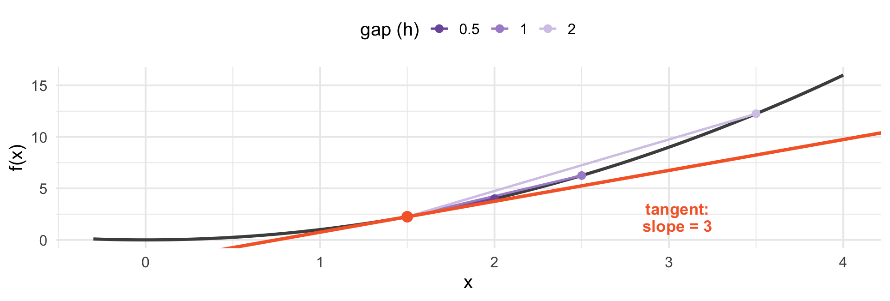
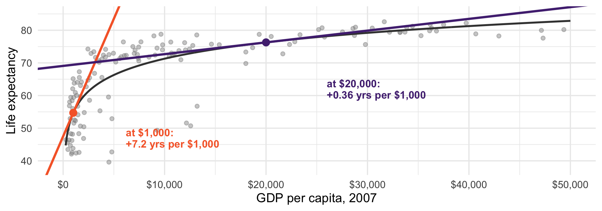
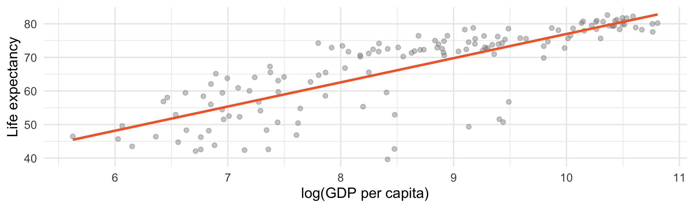
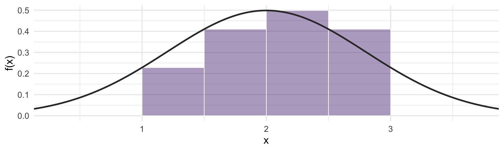
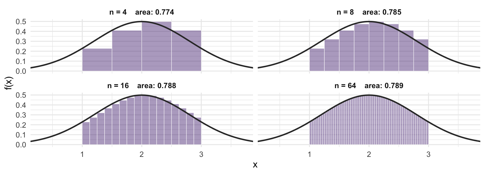
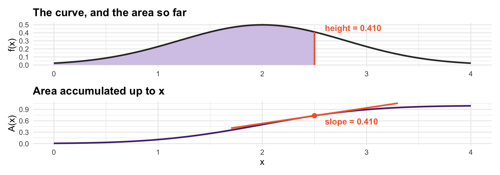

h slope
1 1.000 4.000
2 0.500 3.500
3 0.100 3.100
4 0.010 3.010
5 0.001 3.001Marginal effects, optimization, and area
Everything so far has been discrete: countable outcomes, probability sitting at points
Most things we measure are not: income, vote share, GDP, time until a war ends
Crossing over takes two pieces of calculus
Calculus is not just for making sense of continuous distributions. It is how you read quantitative social science.
Marginal effects - a regression coefficient is a derivative
Diminishing returns - the second derivative
Optimization - most (every?) estimator you will use minimizes or maximizes something
Integration: Probability as area - how we do probability for continuous variables
I am not teaching a calculus course. If all of this brand new, a little time on Khan Acadmey or edX won’t hurt!
What does an expression get close to as its input gets close to something - whether or not it is defined at that point?
Take the slope of \(x^{2}\) between \(1.5\) and \(1.5 + h\). At \(h = 0\) the formula is \(0/0\), which is not defined. But watch the gap shrink:
The ratio is never exactly 3, and at \(h = 0\) it does not exist. It is still clearly heading somewhere:
\[\lim_{h \to 0} \frac{(1.5 + h)^{2} - 1.5^{2}}{h} = 3\]
We mostly consider two types of limits.
Something shrinks to zero. A derivative is a limit as the gap \(h \to 0\); an integral is a limit as the slice width goes to zero. That is how we get “instantaneous” rate of change.
Something grows without bound. Last class: \(SD(\bar{X}) = \sigma/\sqrt{n}\). What happens as \(n \to \infty\)?
n <- c(100, 10000, 1000000)
data.frame(n = format(n, big.mark = ",", scientific = FALSE),
sd_xbar = round(sqrt(0.24 / n), 5)) n sd_xbar
1 100 0.04899
2 10,000 0.00490
3 1,000,000 0.00049It never reaches zero, it goes to zero. That is the engine behind the law of large numbers in a few weeks: with enough data, \(\bar{X}\) stops moving.
If I nudge \(x\) a little, how much does \(f(x)\) move?
Average rate of change over an interval is easy - rise over run. You definitely saw this in ~7th grade!
The derivative is what that ratio approaches as the interval shrinks to nothing:
\[f'(x) = \lim_{h \to 0} \frac{f(x+h) - f(x)}{h}\]
In words: the slope of the curve at a single point.

Secant slopes at \(x = 1.5\): 5, then 4, then 3.5 — closing in on 3.
Power: \(\frac{d}{dx} x^{n} = n x^{n-1}\)
Constant: \(\frac{d}{dx} c = 0\), and \(\frac{d}{dx}\,c f(x) = c f'(x)\)
Sum: \(\frac{d}{dx}[f + g] = f' + g'\)
Log: \(\frac{d}{dx} \ln x = \frac{1}{x}\)
Chain: \(\frac{d}{dx} f(g(x)) = f'(g(x)) \cdot g'(x)\)
When you fit
\[Y = \beta_0 + \beta_1 X\]
\[\frac{dY}{dX} = \beta_1\]
The coefficient is a derivative. That is what “a one-unit increase in \(X\) is associated with \(\beta_1\) more \(Y\)” means.
In a straight line, that slope is the same everywhere
Which is a strong assumption, and often a false one

Different slopes and different points on the curvey
Fitting \(\text{lifeExp} = \beta_0 + \beta_1 \ln(\text{GDP})\), the marginal effect is \(\beta_1 / \text{GDP}\):
| GDP per capita | Years of life per extra $1,000 |
|---|---|
| $1,000 | 7.20 |
| $5,000 | 1.44 |
| $20,000 | 0.36 |
| $40,000 | 0.18 |
A forty-fold difference at different points along the curve.
The derivative says a development dollar does vastly more in a poor country than a rich one
“(How much) Does income improve health?” has no single answer - it depends where you are on the curve
Reporting one number for the whole sample loses a lot of information
This is why “the effect of \(X\) on \(Y\)” is usually not a single nubmer. The right question is: the effect where?
The derivative of the derivative: is the effect growing or shrinking?
\(f'' < 0\) - concave. Effects shrink as \(x\) grows. Diminishing returns.
\(f'' > 0\) - convex. Effects grow. Accelerating, escalating, compounding.
\(f'' = 0\) - constant effect. A straight line.
For our income curve, \(f' = \beta_1/x\) and \(f'' = -\beta_1/x^{2} < 0\). Concave, meaning the effect is declining as x grows.
Diminishing returns to campaign spending: the first $100k buys more than the tenth
Increasing returns to network size: each new user makes a platform more valuable than the last
Returns to schooling: ?
Because \(\frac{d}{dx}\ln x = \frac{1}{x}\), a small change in \(\ln x\) is approximately the proportional change in \(x\):
\[\Delta \ln x \approx \frac{\Delta x}{x}\]
Going from $1,000 to $1,100 and from $40,000 to $44,000 are both \(+10\%\)
In logs they are the same distance. In dollars they are not.
This is why papers log income, GDP, population, and campaign spending.

The curve becomes a line.
At a peak or a trough, the curve is momentarily flat
So: take the derivative, set it equal to zero, solve
This sounds like a math exercise. It is, but its also the reason statistics look the way they do - every estimator in this course (and any other course) is the solution to an optimization problem.
Suppose you must summarize \(x_1, \ldots, x_n\) with a single number \(c\), and you will be penalized by the squared distance from every observation.
\[\min_{c} \; \sum_{i=1}^{n} (x_i - c)^2\]
Differentiate with respect to \(c\) and set to zero:
\[-2\sum_{i=1}^{n}(x_i - c) = 0 \;\;\Longrightarrow\;\; \sum x_i = nc \;\;\Longrightarrow\;\; c = \bar{x}\]
income <- c(45, 50, 52, 47, 60, 55, 120, 28, 430, 73)
optimize(function(c) sum((income - c)^2), c(0, 500))$minimum[1] 96[1] 96The mean is defined by an optimization problem: it is the value closest to all the data, in squared distance
Change the penalty to absolute distance and you get the median instead
That is the real difference between them: a choice about how much to punish being far away
Squared penalty: an observation 10 units away hurts 100 times more than one 1 unit away
So the mean moves toward extreme values to reduce that penalty
Absolute penalty treats all distances proportionally - the median barely moves
In Week 2 we saw the mean dragged upward by skewed income. Now you know why: it was minimizing squared error.
Fitting a constant: minimize \(\sum (y_i - c)^2\) → the mean
Fitting a line: minimize \(\sum (y_i - \beta_0 - \beta_1 x_i)^2\) → least squares
Same set up: differentiate, set to zero, solve. In Week 12 we do it with multiple unkowns rather than one.
Regression coefficients are conditional means
How much accumulates between here and there?
A derivative asks about a rate at a point
An integral asks about a total over a range
They are opposite questions, and it will turn out they are inverse operations
Geometrically: \(\int_a^b f(x)\,dx\) is the area under \(f\) between \(a\) and \(b\).
We know the area of a rectangle. So approximate the region with rectangles.

Four rectangles. Crude: look at all the space above and below the curve we get wrong.

0.774, then 0.785, then 0.788, then 0.789. The true area is 0.7887.
Each rectangle has width \(\Delta x\) and height \(f(x_i)\), so the approximation is
\[\sum_{i} f(x_i)\,\Delta x\]
Let the widths shrink to zero and the number of rectangles go to infinity:
\[\int_a^b f(x)\,dx\]
\(\textstyle\int\) is a stretched S - it literally stands for “sum”
\(dx\) is what \(\Delta x\) becomes when it shrinks to nothing
Derivative: take a slope over a gap, shrink the gap to zero
Integral: take a sum over slices, shrink the slices to zero
They are also inverses of each other, which is what makes integrals computable at all. That is the fundamental theorem of calculus.
Differentiation turns \(F\) into \(f\). Run it backwards: \(F\) is an antiderivative of \(f\) when \(F' = f\).
| \(f(x)\) | an antiderivative \(F(x)\) |
|---|---|
| \(x^{n}\) | \(\dfrac{x^{n+1}}{n+1}\), for \(n \neq -1\) |
| \(1/x\) | \(\ln x\) |
| \(c\) | \(cx\) |
Check one by differentiating: \(\frac{d}{dx}\left(\frac{x^{3}}{3}\right) = x^{2}\). So does \(\frac{x^{3}}{3} + 7\), since constants differentiate away - antiderivatives come in families.
Write \(A(x) = \int_a^x f(t)\,dt\), the area accumulated up to \(x\).
One. Nudge \(x\) out to \(x + dx\). The area picks up a thin sliver of height \(f(x)\) and width \(dx\), so the rate at which area accumulates is the height of the curve:
\[A'(x) = f(x)\]

The bottom curve accumulates the top one, and its slope anywhere is the top curve’s height. Next class these get names: the top becomes a density, the bottom its CDF.
Campaign vote share is modelled as \(V(S) = 30 + 8\ln(S)\), with spending \(S\) in $10,000s. What is \(dV/dS\)? Compare the marginal effect at \(S = 5\) and \(S = 50\).
Is \(V\) concave or convex? What does that imply about where a party should send its last $10,000?
A paper regresses \(\ln(\text{income})\) on years of schooling and reports a coefficient of 0.08. Interpret it in percentage terms.
Show that if you minimize \(\sum_i (x_i - c)^2\) over \(c\), you get \(c = \bar{x}\). (Differentiate, set to zero, solve.)
Read: Probability!, Ch. 4, “Uniform” and “Normal”
If your calculus is rusty, Khan Academy’s derivative and integral units are good and free
Next class: continuous random variables - we learn to conceptualize probability as area under the curve and soon we learn about the most important distribution